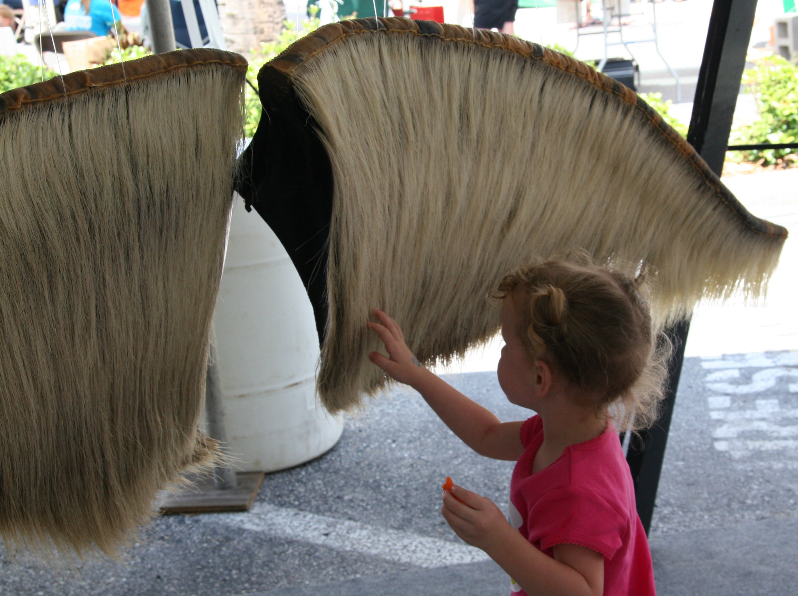
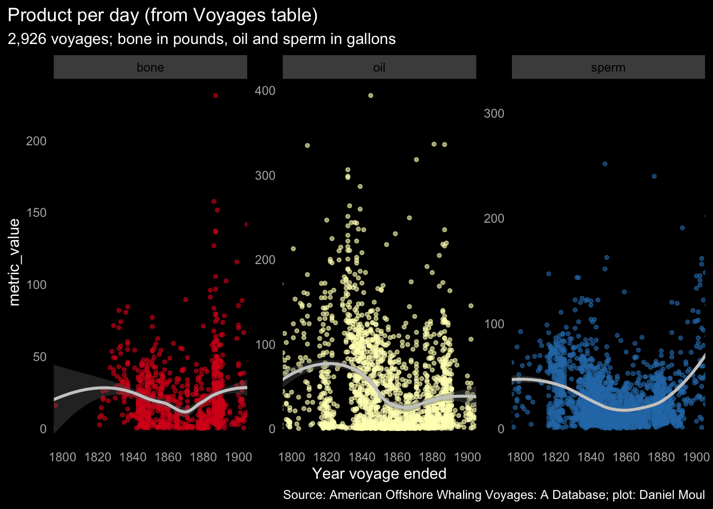

8 The products
The whole purpose of the voyages was to harvest valuable product: sperm oil, whale oil, and whalebone (baleen), among other products. There is a good summary at https://www.whalingmuseum.org/learn/research-topics/whaling-history/whales-and-hunting/ and excerpts from it below.
8.1 Sperm oil
Oil from sperm whale blubber otherwise known as body oil is of a light straw color. It has particular qualities separating it from almost any other type of oil. One in particular is that it retains its lubricating qualities in extreme temperatures making it ideal for light, rapid machinery. Another feature is its superb qualities of illumination. It burns very clearly and brightly and without smoke or odor. Great quantities of sperm oil went into public and private lighting as well as lighthouses. A byproduct of the sperm oil refining process was high quality soap. About half of the crude sperm oil obtained by American vessels at the height of the fishery was exported to other countries. (“Whales and Hunting” 2022-08-18)
8.2 Whale oil
Otherwise known as “train oil” the whale oils are varying shades of brown in color, depending upon the age of the blubber from which they were boiled and the general health of the animal from which they were obtained. Whale oils were the first of all oils — animal or mineral — to achieve commercial importance. The principle sources for whale oil in the days of Yankee whaling were right whales, bowhead whales and humpback whales. Yankee whaling merchants sometimes adopted the phrase “brown oil is better than no oil,” in their instructions to their ship captains meaning that rather than return home without having filled the ship with sperm oil, they were to take other whales instead. Whale oil has an ancient history having been used in medieval Europe as an illuminant and a lubricant as well as food. It saw new uses during the 19th century Industrial Revolution both in Europe and America in the tempering of steel, screw cutting and cordage manufacture. It continued to be used as an illuminant particularly in the headlamps of miners. By-products of the whale oil refining process were soap and stearin a material that was added to spermaceti to decrease its brittleness and to make a smoother burning candle. (“Whales and Hunting” 2022-08-18)
Collecting whale oil involved cutting the blubber from the whale:
Then boiling it down to collect the oil:
8.3 Whalebone (baleen)
Instead of teeth, baleen whales have long strips, known as baleen, which hang from the roofs of their mouths, and which they use to strain out krill from sea water. Baleen is made of keratin, the same substance found in human nails, hair, hoofs, and claws. It was used in a variety of nineteenth-century products: buggy whips, carriage springs, corset stays, fishing poles, hoops for women’s skirts, umbrella ribs, and other applications for which plastic or steel would now be used. (“Whales and Hunting” 2022-08-18)

8.4 Product yield per voyage
How much was harvested, and how did that change over time? If these voyages are representative of the industry, yields dropped through the 1840s as more ships entered the hunt, then increased again, presumably due to more effective methods or seeking more productive grounds that weren’t fished out.
8.4.1 Introduction
The units of product used in the Voyages table are noted here. I have changed the units to make it easier to plot all three products together:
- bone: quantity of whalebone or baleen returned, in pounds
- sperm: quantity of sperm oil returned, in gallons (originally, in barrels)
- oil: quantity of whale oil returned, in gallons (originally, in barrels)
The Voyages table includes product yield and (in most cases) voyage start and end dates. I filtered out voyages likely to misrepresent the results, for example, voyages shorter than 200 km, which leaves 2,766 voyages. See Section 11.1 Dealing with errors, duplicates, and omissions for details.
The Logbook table includes records for a subset of the voyages in the Voyages table and includes latitude and longitude on specific days. From this I calculated distances for the XX voyages that report returning with at least one product.
To improve clarity in the following plots I did the following:
- Use LOESS lines to summarize the data presented in scatter plots.
- Limit the time frame displayed to 1800-1900. There are relatively few voyages before and after this range; including them would distort the LOESS lines.
8.4.2 Product per voyage
The smaller set of 1,256 voyages in df_log shows similar LOESS lines:
8.4.3 Normalized product yield
Time is money. The further a vessel travels and the longer it is at sea, the higher the expenses. Product per km and product per day are measures of efficiency.
The efficiency in gathering whale oil plummeted in 1840s and 1850s as vessels traveled much further. This was at the same time that the amount of whale oil generated reached its peak.
There were very wide ranges in voyage distance and duration.
The larger set of voyages in the Voyages table has the basic shape and magnitude of Figure 8.8 above, which uses the smaller set of voyages in the Logbook table.
The scatterplots below show the data behind the LOESS lines:

8.5 Combinations of product
Whaling crews typically returned with more than one product. The plot below shows discrete sets of product combinations.
Note that in the Voyages table 3,845 of the 15,608 voyages (25%) are missing product values (bone, sperm, oil) or record zero product. It seems unlikely that a quarter of all whaling voyages returned without any product, so I assume the data is incomplete. We can hope the data at hand is reasonably representative as noted in the assumptions in Chapter 2 Overview.
{kind=link}
{kind=link}
{kind=link}